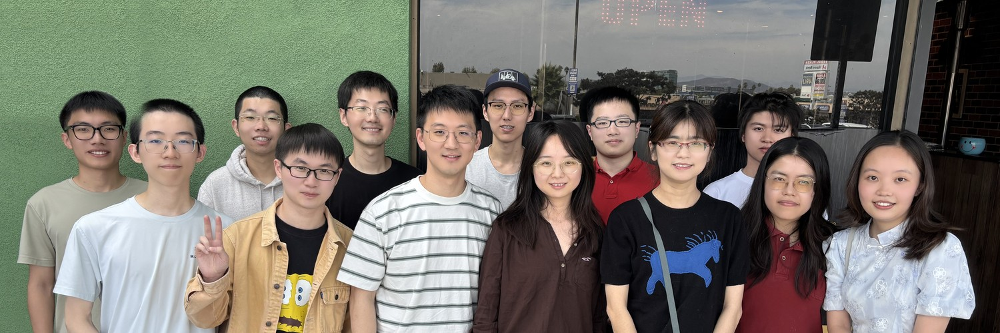

@PicassoLabUCSD 发帖工具包
英文帖子文案可直接复制；图片点击即下载，按编号顺序上传。字数按 X 规则计算（链接算 23）。
首帖视频（3D 漫画，4:5，16 秒）下载 patterns_comic.mp4
主页头图（1500x500）

下载 banner.jpg
Edit profile → Header 上传。头像建议用 lab logo；Bio 建议：
Picasso Lab @UCSanDiego, led by Prof. Yufei Ding. Systems for quantum computing, AI and computer architecture. Lab life: lots of hot pot.
Website 填 yufeiding.ucsd.edu
第一条帖子怎么发才有流量
- 先把主页装修好再发：头图、头像、Bio、网址。新访客会先看主页，没装修好的主页很少有人关注。
- 首帖 = 视频 + thread：原生上传的视频会自动播放，曝光比纯文字、外链高很多。视频是静音自动播放的，所以画面里的大字已经把故事讲清楚了。
- 发的时间：美国太平洋时间周二到周四早上 8-10 点（北京时间当晚 23 点到次日 1 点），美国和欧洲的学术圈都在线。
- 第一个小时最关键：发之前在组里群里通知好，发出后 30 分钟内请 Yufei 老师和组员用个人号引用转发（Quote）并写一句话，再加上点赞和回复。X 的推荐算法很看重早期互动，回复和引用比点赞的权重高。
- @ 合适的账号：正文里的 @UCSanDiego，加上作者本人、合作方、会议和基金会，他们转发就能带来第一批精准关注。一条帖子 @ 不超过 2-3 个。
- 外链放回复里：正文带外链会被降低推荐，所以论文和网站链接都放在第一条回复里。
- 节奏：前两周每 2 天发一条（按下面的顺序），之后每周 2-3 条。成果帖和生活帖穿插着发，火锅短剧这类轻松内容放在周末。
- 平时多互动：关注并回复领域里的大号（会议、同行实验室、相关研究者），在别人的热帖下面做有内容的回复，这是新账号涨粉最快的方法。
- 图片的 Alt text：上传图片后点 "+Alt"，写一句描述，有利于无障碍访问和搜索。
帖子
第一条是近期唯一要发的；后面几条留作以后的素材。
Launch post: the ISCA Best Paper comic近期唯一一条 · 发完置顶 (Pin)
主帖250/280
Hello, X! We are Picasso Lab at @UCSanDiego, led by Prof. Yufei Ding. To say hi, a 16-second comic of our #ISCA2026 Best Paper: in MoE LLMs, expert choices look random and data movement becomes the bottleneck. We found the patterns behind the chaos.
回复 1（回复在自己上一条下面）273/280
"Patterns behind Chaos: Forecasting Data Movement for Efficient Large-Scale MoE LLM Inference" Profiled 4 MoE models (200B-1000B) over 24,000+ requests. Guided by the insights: 6.6x average speedup on wafer-scale GPUs, up to 1.25x on today's GPUs. https://arxiv.org/abs/2510.05497
回复 2（回复在自己上一条下面）146/280
Congrats to lead author Zhongkai Yu and our coauthors at IU Bloomington, Columbia, Samsung and NVIDIA. More from the lab: https://yufeiding.ucsd.edu
视频直接上传（4:5 竖版，16 秒，静音也能看懂）。主帖不放链接，论文和网站链接放在回复里。发完立刻 Pin to profile。
LightStim grantDay 4
主帖247/280
Xiang Fang received a @unitaryfund grant to keep building LightStim, an open-source framework for constructing and benchmarking quantum error correction protocols, with detectors and logical observables built automatically. #QuantumComputing #QEC
回复 1（回复在自己上一条下面）29/280
Code: https://github.com/QuTone/LightStim


发之前确认 Unitary Foundation 的 X 账号（目前是 @unitaryfund）。
Dr. Hezi ZhangDay 8
主帖240/280
Congratulations to Dr. Hezi Zhang on her PhD! Hezi joins UW-Madison ECE as an Assistant Professor this fall, and she is recruiting students. She also welcomed a baby during her PhD while publishing top papers. We are so proud of you, Hezi.
回复 1（回复在自己上一条下面）40/280
Hezi's homepage: https://www.hezizhang.com


如果 Hezi 有 X 账号，把名字换成 @她的账号；也可 @UWMadison / 她所在系的账号。
Welcome new membersDay 10
主帖185/280
Welcome to Xinwei, who just started a PhD with us, and to all our new interns and master's students! Prof. Ding hosted a big welcome lunch to kick off the year. Here is to a great one.


新同学有 X 账号的话直接 @，他们转发会带来第一批关注。
AMMA at MICRO 2026Day 12
主帖155/280
AMMA, by Zhongkai Yu, has been accepted to #MICRO2026. Zhongkai celebrated the only way he knows: buying everyone milk tea. Paper: https://arxiv.org/abs/2604.26103

可以请 Zhongkai 补一句论文核心贡献，替换第二句。
Lab life, summer 2026Day 14
主帖190/280
Lab life, summer 2026: a Saturday in San Francisco, hot pot with a face-changing show, a king crab feast, and a dinner in Cupertino with the Bay Area interns. Good research needs good food.


Dr. Chang Chen之后（Throwback）
主帖208/280
Throwback: this spring we welcomed Dr. Chang Chen to Picasso Lab. Chang is the first author of Centauri, winner of the ASPLOS 2024 Best Paper Award. Fun fact: Chang was also the top Gaokao scorer in Wenzhou.

Dr. Zheng Wang之后（Throwback）
主帖178/280
Throwback: congratulations again to Dr. Zheng Wang, who defended his thesis "Overcoming Input Irregularity: Balanced and Efficient System Designs for Large Scale Model Training."
回复 1（回复在自己上一条下面）60/280
One of Zheng's papers, at OSDI 2025: https://www.usenix.org/conference/osdi25/presentation/wang-zheng